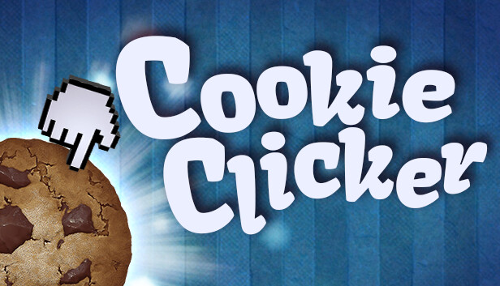
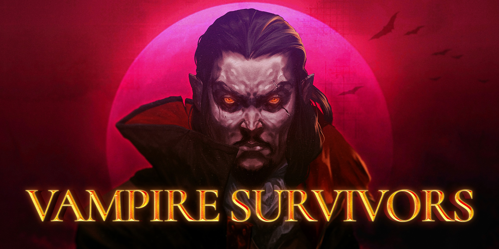
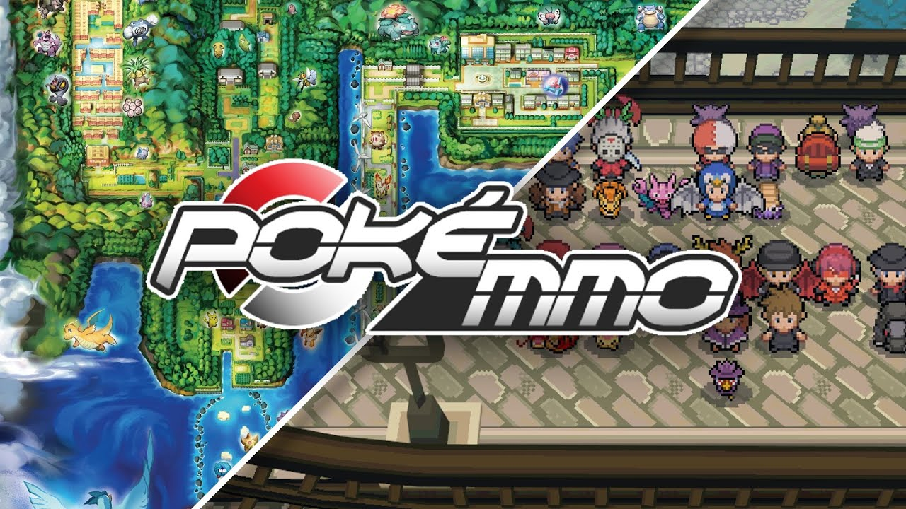

|  |
Cookie Clicker |
En el cenit de la actividad educativa, emergió "Cookie Clicker", cuya premisa era simple pero adictiva: acumular galletas con cada clic. Sin embargo, la breve era de diversión se vio truncada por la aparición de un astuto hacker autodenominado "Abeja". Esta enigmática figura no solo participó en el juego, sino que desafió sus límites mediante manipulaciones informáticas, ganándose la admiración y el respeto de la comunidad estudiantil. Su habilidad para alterar las reglas del juego le otorgó una supremacía virtual, dejando a todos boquiabiertos ante su ingenio y destreza. |
Plataforma:Online Lanzamiento:21/09/2023 Finalización:10/11/2023 Objetivo:Galletas |
|  |
Vampire Survivors |
Un juego cuya naturaleza despierta la creatividad y la competencia se convirtió en la atracción principal para todos los estudiantes. Entre la multitud, surgió un individuo cuyos esfuerzos diligentemente ocultos lo llevaron a alcanzar niveles de dominio que desafiaban la imaginación. Como una sombra en la penumbra, este estudiante misterioso se deslizaba entre los desafíos del juego, dejando una estela de admiración y asombro a su paso. Su habilidad para sortear obstáculos y su destreza sin igual lo convirtieron en el protagonista inadvertido de esta intrincada danza digital. |
Plataforma:Steam Lanzamiento:10/11/2023 Finalización:21/01/2024 Objetivo:30 minutos |
|  |
PokeMMO |
En el vasto panorama de los juegos efímeros, hay una historia singular que destaca por su breve pero apasionada travesía. Se trata de un juego que surgió velozmente, apenas para desaparecer con igual premura. Sin embargo, en medio de su fugacidad, una figura se alzó con determinación, desafiando la transitoriedad del entretenimiento digital. Esta persona, cuyo nombre se desvanece entre los rincones olvidados de la red, se sumergió en el juego con un compromiso excepcional, conquistando múltiples desafios antes de abandonarlo para siempre. Su dedicación, aunque breve, resonó como un eco en el vasto universo de los juegos virtuales, demostrando que incluso en lo efímero, puede hallarse la grandeza del compromiso. |
Plataforma:Unknown Lanzamiento:21/01/2024 Finalización:11/02/2024 Objetivo:Gym |

|
Minecraft |
En el tejido mismo de la experiencia escolar, se erige un juego que desafía la fugacidad del tiempo y se convierte en un emblema indeleble de la vida estudiantil. Este juego, cuyo nombre se susurra con veneración entre los pasillos académicos, persiste como un legado perdurable que atraviesa generaciones. En su núcleo, se encuentran individuos selectos, auténticos arquitectos del entretenimiento y la intriga en el ámbito educativo. Con su ingenio y dedicación, han creado un cosmos paralelo tan fascinante como la propia realidad, donde cada aula se transforma en un escenario de épicas insólitas y aventuras imborrables. |
Plataforma:Todas disponibles Lanzamiento:21/09/2023 Finalización:Keep working. Objetivo: |